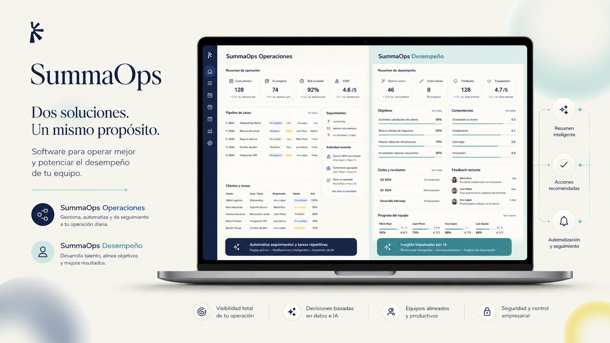
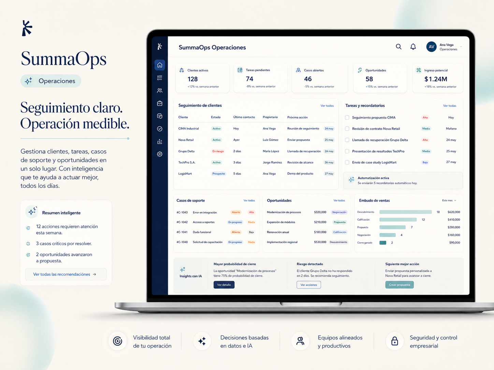
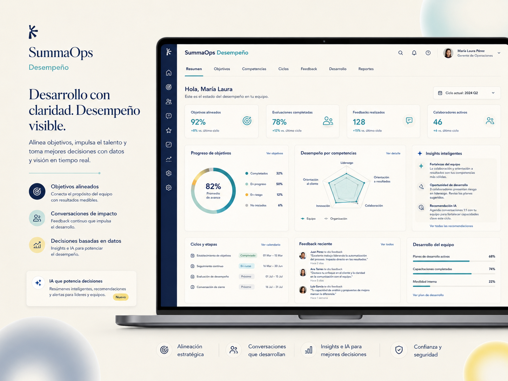

1
Seguimiento
Estados, responsables, fechas y próximos pasos visibles para todos.
Aplicaciones operativas con IA
Diseñamos aplicaciones simples para dar seguimiento, automatizar tareas y medir procesos clave con IA aplicada al trabajo real.


Necesidades que resolvemos
SummaOps ayuda a ordenar lo que hoy está disperso en planillas, mails, WhatsApp o conversaciones sueltas.
Estados, responsables, fechas y próximos pasos visibles para todos.
Recordatorios, alertas, resúmenes y reportes para bajar carga manual.
Indicadores simples para entender actividad, vencimientos y avances.
Soluciones SummaOps
Partimos de una necesidad concreta y configuramos una solución liviana para que el equipo pueda usarla desde el día a día.
Clientes, casos, tareas, responsables, vencimientos e historial.
Objetivos, feedback, competencias y planes de mejora.
Alertas, resúmenes, clasificación, reportes y mensajes sugeridos.
Solución 01
Una aplicación para saber qué está pendiente, quién lo tiene, cuándo vence y qué pasó antes.


Solución 02
Una forma simple de ordenar objetivos, evaluaciones, feedback y planes de mejora sin perder contexto.
Método S.U.M.M.A.
Menos diagnóstico eterno. Más foco, montaje y aprendizaje con usuarios reales.
Relevamos el proceso, el dolor principal y qué resultado necesita la empresa.
Armamos la primera versión con campos, estados, responsables, alertas y vistas.
Probamos, ajustamos y sumamos módulos cuando aportan valor real.

Experiencia aplicada
SummaOps combina experiencia operativa, atención al cliente, ventas, liderazgo y automatización. La tecnología aparece después de entender cómo trabaja la gente.
Confianza
“Pablo es un profesional altamente dedicado, enfocado en generar resultados y hacer crecer a las empresas de forma pragmática y eficiente.”
Mariana Pereyra · VERDE“Me brindó herramientas para gestionarme mejor en el ámbito laboral y personal. Destaco su calidad humana y su forma de comunicarse.”
Matías Farher · Líder de equiposContacto
Agendemos una primera conversación para entender qué necesitás mejorar y evaluar una solución simple, útil y fácil de implementar.
Las respuestas llegan a contacto@summaops.com y se reenvían a tu Gmail personal.